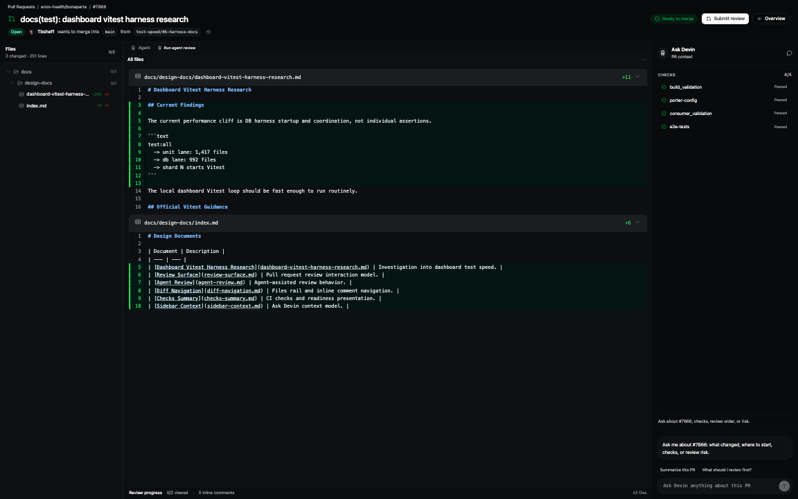
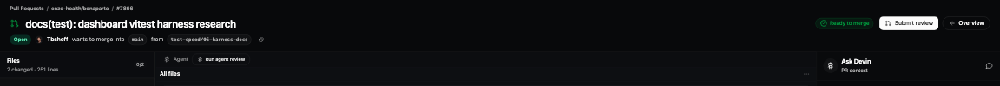
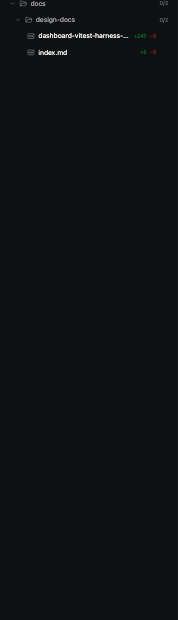
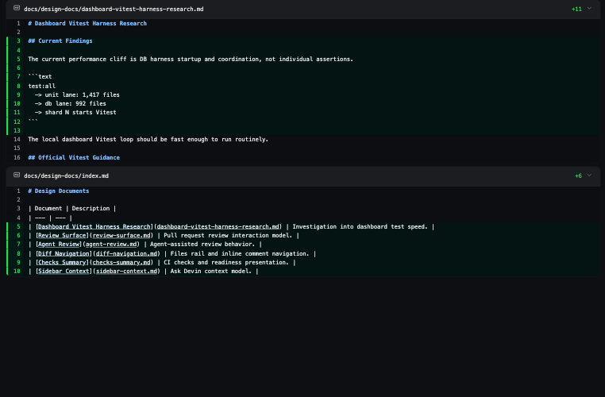
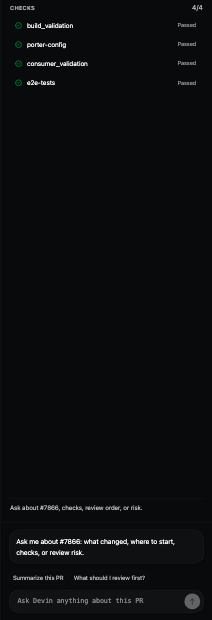

Review Interface: Devin Reference vs Synara Capture
Left side records the visible traits from the Devin reference screenshots supplied in chat. Right side is a fresh browser capture of the current Synara review fixture. The original Devin screenshots are not available as local files in this workspace, so the left column is a reference-readout rather than a pixel crop.
Devin Reference: Full Review Workspace
Reference traits
- One focused PR frame: route chrome stays quiet and the PR owns the screen.
- Three review zones: files/context on the left, diff in the center, assistant/context on the right.
- Black workspace: low-contrast borders and subtle surface separation.
Synara Current: Full Review Workspace
Actual capture

- Similar: files-first layout, central diff, right Ask Devin rail, black visual language.
- Different: route/header density is still tighter and more icon-heavy than the Devin reference.
Devin Reference: Top / PR Header
Reference traits
- PR identity first: title, number, branch context, checks/readiness.
- Few primary actions: submit/review action is clear; secondary controls recede.
- No browser-tab shelf: PR review is not visually inside a tabbed browser.
Synara Current: Top / PR Header
Actual crop

- Similar: compact PR-first header and no open browser tabs on the detail surface.
- Different: branch/readiness/submit/overview still compete within a very short row.
Devin Reference: File Tree
Reference traits
- Folder tree: changed files are scannable by directory.
- Persistent progress: viewed state is visible without needing hover.
- Readable width: enough room for repository paths and file names.
Synara Current: File Tree
Actual crop

- Similar: true folder tree with changed counts and selected file state.
- Different: rail is narrower than Devin and the unviewed target is too faint.
Devin Reference: Diff Canvas
Reference traits
- Dominant center canvas: diff area gets most horizontal and vertical space.
- Quiet controls: layout/wrap tools do not read as an editor toolbar.
- Readable code: additions are clear without overpowering the dark surface.
Synara Current: Diff Canvas
Actual crop

- Similar: diff dominates the center, additions are subdued, files stack vertically.
- Different: explicit layout controls and the agent row still add more toolbar texture than Devin.
Devin Reference: Ask Devin Rail
Reference traits
- Assistant-first: rail reads as a focused PR assistant, not a generic inspector.
- Checks visible: CI status is available without crowding the diff.
- Composer anchored: ask box stays at the bottom with light prompt affordances.
Synara Current: Ask Devin Rail
Actual crop

- Similar: Ask Devin identity, checks list, bottom composer, compact suggestions.
- Different: checks still dominate the middle; richer PR context/assistant empty state should come before raw checks.